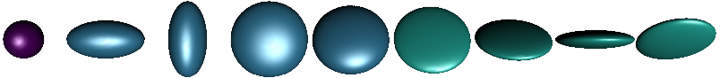

Symmetric positive definite matrices
Manifolds.SymmetricPositiveDefinite — TypeSymmetricPositiveDefinite{T} <: AbstractDecoratorManifold{ℝ}The manifold of symmetric positive definite matrices, i.e.
\[\mathcal P(n) = \bigl\{ p ∈ ℝ^{n×n}\ \big|\ a^\mathrm{T}pa > 0 \text{ for all } a ∈ ℝ^{n}\backslash\{0\} \bigr\}\]
The tangent space at $T_p\mathcal P(n)$ reads
\[ T_p\mathcal P(n) = \bigl\{ X \in \mathbb R^{n×n} \big|\ X=X^\mathrm{T} \bigr\},\]
i.e. the set of symmetric matrices,
Constructor
SymmetricPositiveDefinite(n; parameter::Symbol=:type)generates the manifold $\mathcal P(n) \subset ℝ^{n×n}$
This manifold can – for example – be illustrated as ellipsoids: since the eigenvalues are all positive they can be taken as lengths of the axes of an ellipsoids while the directions are given by the eigenvectors.

The manifold can be equipped with different metrics
Common and metric independent functions
Base.convert — Methodconvert(::Type{AbstractMatrix}, p::SPDPoint)return the point p as a matrix. The matrix is either stored within the SPDPoint or reconstructed from p.eigen.
Base.rand — Methodrand(M::SymmetricPositiveDefinite; σ::Real=1)Generate a random symmetric positive definite matrix on the SymmetricPositiveDefinite manifold M.
ManifoldsBase.check_point — Methodcheck_point(M::SymmetricPositiveDefinite, p; kwargs...)checks, whether p is a valid point on the SymmetricPositiveDefinite M, i.e. is a matrix of size (N,N), symmetric and positive definite. The tolerance for the second to last test can be set using the kwargs....
ManifoldsBase.check_vector — Methodcheck_vector(M::SymmetricPositiveDefinite, p, X; kwargs... )Check whether X is a tangent vector to p on the SymmetricPositiveDefinite M, i.e. atfer check_point(M,p), X has to be of same dimension as p and a symmetric matrix, i.e. this stores tangent vectors as elements of the corresponding Lie group. The tolerance for the last test can be set using the kwargs....
ManifoldsBase.injectivity_radius — Methodinjectivity_radius(M::SymmetricPositiveDefinite[, p])
injectivity_radius(M::MetricManifold{SymmetricPositiveDefinite,AffineInvariantMetric}[, p])
injectivity_radius(M::MetricManifold{SymmetricPositiveDefinite,LogCholeskyMetric}[, p])Return the injectivity radius of the SymmetricPositiveDefinite. Since M is a Hadamard manifold with respect to the AffineInvariantMetric and the LogCholeskyMetric, the injectivity radius is globally $∞$.
ManifoldsBase.is_flat — Methodis_flat(::SymmetricPositiveDefinite)Return false. SymmetricPositiveDefinite is not a flat manifold.
ManifoldsBase.manifold_dimension — Methodmanifold_dimension(M::SymmetricPositiveDefinite)returns the dimension of SymmetricPositiveDefinite M $=\mathcal P(n), n ∈ ℕ$, i.e.
\[\dim \mathcal P(n) = \frac{n(n+1)}{2}.\]
ManifoldsBase.project — Methodproject(M::SymmetricPositiveDefinite, p, X)project a matrix from the embedding onto the tangent space $T_p\mathcal P(n)$ of the SymmetricPositiveDefinite matrices, i.e. the set of symmetric matrices.
ManifoldsBase.representation_size — Methodrepresentation_size(M::SymmetricPositiveDefinite)Return the size of an array representing an element on the SymmetricPositiveDefinite manifold M, i.e. $n×n$, the size of such a symmetric positive definite matrix on $\mathcal M = \mathcal P(n)$.
ManifoldsBase.zero_vector — Methodzero_vector(M::SymmetricPositiveDefinite, p)returns the zero tangent vector in the tangent space of the symmetric positive definite matrix p on the SymmetricPositiveDefinite manifold M.
Default metric: the affine invariant metric
Manifolds.AffineInvariantMetric — TypeAffineInvariantMetric <: AbstractMetricThe linear affine metric is the metric for symmetric positive definite matrices, that employs matrix logarithms and exponentials, which yields a linear and affine metric.
This metric is also the default metric, i.e. any call of the following functions with P=SymmetricPositiveDefinite(3) will result in MetricManifold(P,AffineInvariantMetric())and hence yield the formulae described in this section.
Base.exp — Methodexp(M::SymmetricPositiveDefinite, p, X)
exp(M::MetricManifold{<:SymmetricPositiveDefinite,AffineInvariantMetric}, p, X)Compute the exponential map from p with tangent vector X on the SymmetricPositiveDefinite M with its default MetricManifold having the AffineInvariantMetric. The formula reads
\[\exp_p X = p^{\frac{1}{2}}\operatorname{Exp}(p^{-\frac{1}{2}} X p^{-\frac{1}{2}})p^{\frac{1}{2}},\]
where $\operatorname{Exp}$ denotes to the matrix exponential.
Base.log — Methodlog(M::SymmetricPositiveDefinite, p, q)
log(M::MetricManifold{SymmetricPositiveDefinite,AffineInvariantMetric}, p, q)Compute the logarithmic map from p to q on the SymmetricPositiveDefinite as a MetricManifold with AffineInvariantMetric. The formula reads
\[\log_p q = p^{\frac{1}{2}}\operatorname{Log}(p^{-\frac{1}{2}}qp^{-\frac{1}{2}})p^{\frac{1}{2}},\]
where $\operatorname{Log}$ denotes to the matrix logarithm.
ManifoldDiff.riemannian_Hessian — Methodriemannian_Hessian(M::SymmetricPositiveDefinite, p, G, H, X)The Riemannian Hessian can be computed as stated in Eq. (7.3) [Ngu23]. Let $\nabla f(p)$ denote the Euclidean gradient G, $\nabla^2 f(p)[X]$ the Euclidean Hessian H, and $\operatorname{sym}(X) = \frac{1}{2}\bigl(X^{\mathrm{T}}+X\bigr)$ the symmetrization operator. Then the formula reads
\[ \operatorname{Hess}f(p)[X] = p\operatorname{sym}(∇^2 f(p)[X])p + \operatorname{sym}\bigl( X\operatorname{sym}\bigl(∇ f(p)\bigr)p)\]
Manifolds.manifold_volume — Methodmanifold_volume(::SymmetricPositiveDefinite)Return volume of the SymmetricPositiveDefinite manifold, i.e. infinity.
Manifolds.volume_density — Methodvolume_density(::SymmetricPositiveDefinite, p, X)Compute the volume density of the SymmetricPositiveDefinite manifold at p in direction X. See [CKA17], Section 6.2 for details. Note that metric in Manifolds.jl has a different scaling factor than the reference.
ManifoldsBase.change_metric — Methodchange_metric(M::SymmetricPositiveDefinite, E::EuclideanMetric, p, X)Given a tangent vector $X ∈ T_p\mathcal P(n)$ with respect to the EuclideanMetric g_E, this function changes into the AffineInvariantMetric (default) metric on the SymmetricPositiveDefinite M.
To be precise we are looking for $c\colon T_p\mathcal P(n) → T_p\mathcal P(n)$ such that for all $Y,Z ∈ T_p\mathcal P(n)$` it holds
\[⟨Y,Z⟩ = \operatorname{tr}(YZ) = \operatorname{tr}(p^{-1}c(Y)p^{-1}c(Z)) = g_p(c(Z),c(Y))\]
and hence $c(X) = pX$ is computed.
ManifoldsBase.change_representer — Methodchange_representer(M::SymmetricPositiveDefinite, E::EuclideanMetric, p, X)Given a tangent vector $X ∈ T_p\mathcal M$ representing a linear function on the tangent space at p with respect to the EuclideanMetric g_E, this is turned into the representer with respect to the (default) metric, the AffineInvariantMetric on the SymmetricPositiveDefinite M.
To be precise we are looking for $Z∈T_p\mathcal P(n)$ such that for all $Y∈T_p\mathcal P(n)$` it holds
\[⟨X,Y⟩ = \operatorname{tr}(XY) = \operatorname{tr}(p^{-1}Zp^{-1}Y) = g_p(Z,Y)\]
and hence $Z = pXp$.
ManifoldsBase.distance — Methoddistance(M::SymmetricPositiveDefinite, p, q)
distance(M::MetricManifold{SymmetricPositiveDefinite,AffineInvariantMetric}, p, q)Compute the distance on the SymmetricPositiveDefinite manifold between p and q, as a MetricManifold with AffineInvariantMetric. The formula reads
\[d_{\mathcal P(n)}(p,q) = \lVert \operatorname{Log}(p^{-\frac{1}{2}}qp^{-\frac{1}{2}})\rVert_{\mathrm{F}}.,\]
where $\operatorname{Log}$ denotes the matrix logarithm and $\lVert⋅\rVert_{\mathrm{F}}$ denotes the matrix Frobenius norm.
ManifoldsBase.get_basis — Method[Ξ,κ] = get_basis(M::SymmetricPositiveDefinite, p, B::DefaultOrthonormalBasis)
[Ξ,κ] = get_basis(M::MetricManifold{<:SymmetricPositiveDefinite,AffineInvariantMetric}, p, B::DefaultOrthonormalBasis)Return a default ONB for the tangent space $T_p\mathcal P(n)$ of the SymmetricPositiveDefinite with respect to the AffineInvariantMetric.
\[ g_p(X,Y) = \operatorname{tr}(p^{-1} X p^{-1} Y),\]
The basis constructed here is based on the ONB for symmetric matrices constructed as follows. Let
\[\Delta_{i,j} = (a_{k,l})_{k,l=1}^n \quad \text{ with } a_{k,l} = \begin{cases} 1 & \mbox{ for } k=l \text{ if } i=j\\ \frac{1}{\sqrt{2}} & \mbox{ for } k=i, l=j \text{ or } k=j, l=i\\ 0 & \text{ else.} \end{cases}\]
which forms an ONB for the space of symmetric matrices.
We then form the ONB by
\[ \Xi_{i,j} = p^{\frac{1}{2}}\Delta_{i,j}p^{\frac{1}{2}},\qquad i=1,\ldots,n, j=i,\ldots,n.\]
ManifoldsBase.get_basis_diagonalizing — Method[Ξ,κ] = get_basis_diagonalizing(M::SymmetricPositiveDefinite, p, B::DiagonalizingOrthonormalBasis)
[Ξ,κ] = get_basis_diagonalizing(M::MetricManifold{<:SymmetricPositiveDefinite,AffineInvariantMetric}, p, B::DiagonalizingOrthonormalBasis)Return a orthonormal basis Ξ as a vector of tangent vectors (of length manifold_dimension of M) in the tangent space of p on the MetricManifold of SymmetricPositiveDefinite manifold M with AffineInvariantMetric that diagonalizes the curvature tensor $R(u,v)w$ with eigenvalues κ and where the direction B.frame_direction $V$ has curvature 0.
The construction is based on an ONB for the symmetric matrices similar to get_basis(::SymmetricPositiveDefinite, p, ::DefaultOrthonormalBasis just that the ONB here is build from the eigen vectors of $p^{\frac{1}{2}}Vp^{\frac{1}{2}}$.
ManifoldsBase.get_coordinates — Methodget_coordinates(::SymmetricPositiveDefinite, p, X, ::DefaultOrthonormalBasis)Using the basis from get_basis the coordinates with respect to this ONB can be simplified to
\[ c_k = \mathrm{tr}(p^{-\frac{1}{2}}\Delta_{i,j} X)\]
where $k$ is trhe linearized index of the $i=1,\ldots,n, j=i,\ldots,n$.
ManifoldsBase.get_vector — Methodget_vector(::SymmetricPositiveDefinite, p, c, ::DefaultOrthonormalBasis)Using the basis from get_basis the vector reconstruction with respect to this ONB can be simplified to
\[ X = p^{\frac{1}{2}} \Biggl( \sum_{i=1,j=i}^n c_k \Delta_{i,j} \Biggr) p^{\frac{1}{2}}\]
where $k$ is the linearized index of the $i=1,\ldots,n, j=i,\ldots,n$.
ManifoldsBase.inner — Methodinner(M::SymmetricPositiveDefinite, p, X, Y)
inner(M::MetricManifold{SymmetricPositiveDefinite,AffineInvariantMetric}, p, X, Y)Compute the inner product of X, Y in the tangent space of p on the SymmetricPositiveDefinite manifold M, as a MetricManifold with AffineInvariantMetric. The formula reads
\[g_p(X,Y) = \operatorname{tr}(p^{-1} X p^{-1} Y),\]
ManifoldsBase.is_flat — Methodis_flat(::MetricManifold{ℝ,<:SymmetricPositiveDefinite,AffineInvariantMetric})Return false. SymmetricPositiveDefinite with AffineInvariantMetric is not a flat manifold.
ManifoldsBase.parallel_transport_to — Methodparallel_transport_to(M::SymmetricPositiveDefinite, p, X, q)
parallel_transport_to(M::MetricManifold{SymmetricPositiveDefinite,AffineInvariantMetric}, p, X, y)Compute the parallel transport of X from the tangent space at p to the tangent space at q on the SymmetricPositiveDefinite as a MetricManifold with the AffineInvariantMetric. The formula reads
\[\mathcal P_{q←p}X = p^{\frac{1}{2}} \operatorname{Exp}\bigl( \frac{1}{2}p^{-\frac{1}{2}}\log_p(q)p^{-\frac{1}{2}} \bigr) p^{-\frac{1}{2}}X p^{-\frac{1}{2}} \operatorname{Exp}\bigl( \frac{1}{2}p^{-\frac{1}{2}}\log_p(q)p^{-\frac{1}{2}} \bigr) p^{\frac{1}{2}},\]
where $\operatorname{Exp}$ denotes the matrix exponential and log the logarithmic map on SymmetricPositiveDefinite (again with respect to the AffineInvariantMetric).
ManifoldsBase.riemann_tensor — Methodriemann_tensor(::SymmetricPositiveDefinite, p, X, Y, Z)Compute the value of Riemann tensor on the SymmetricPositiveDefinite manifold. The formula reads [Ren11] $R(X,Y)Z=p^{1/2}R(X_I, Y_I)Z_Ip^{1/2}$, where $R_I(X_I, Y_I)Z_I=\frac{1}{4}[Z_I, [X_I, Y_I]]$, $X_I=p^{-1/2}Xp^{-1/2}$, $Y_I=p^{-1/2}Yp^{-1/2}$ and $Z_I=p^{-1/2}Zp^{-1/2}$.
ManifoldsBase.sectional_curvature_max — Methodsectional_curvature_max(M::SymmetricPositiveDefinite)Return minimum sectional curvature of SymmetricPositiveDefinite manifold, that is 0.
ManifoldsBase.sectional_curvature_min — Methodsectional_curvature_min(M::SymmetricPositiveDefinite)Return minimum sectional curvature of SymmetricPositiveDefinite manifold, that is 0 for SPD(1) and SPD(2) and -0.25 otherwise.
Bures-Wasserstein metric
Manifolds.BuresWassersteinMetric — TypeBurresWassertseinMetric <: AbstractMetricThe Bures Wasserstein metric for symmetric positive definite matrices [MMP18]
Base.exp — Methodexp(::MatricManifold{ℝ,SymmetricPositiveDefinite,BuresWassersteinMetric}, p, X)Compute the exponential map on SymmetricPositiveDefinite with respect to the BuresWassersteinMetric given by
\[ \exp_p(X) = p+X+L_p(X)pL_p(X)\]
where $q=L_p(X)$ denotes the Lyapunov operator, i.e. it solves $pq + qp = X$.
Base.log — Methodlog(::MatricManifold{SymmetricPositiveDefinite,BuresWassersteinMetric}, p, q)Compute the logarithmic map on SymmetricPositiveDefinite with respect to the BuresWassersteinMetric given by
\[ \log_p(q) = (pq)^{\frac{1}{2}} + (qp)^{\frac{1}{2}} - 2 p\]
where $q=L_p(X)$ denotes the Lyapunov operator, i.e. it solves $pq + qp = X$.
ManifoldsBase.change_representer — Methodchange_representer(M::MetricManifold{ℝ,<:SymmetricPositiveDefinite,BuresWassersteinMetric}, E::EuclideanMetric, p, X)Given a tangent vector $X ∈ T_p\mathcal M$ representing a linear function on the tangent space at p with respect to the EuclideanMetric g_E, this is turned into the representer with respect to the (default) metric, the BuresWassersteinMetric on the SymmetricPositiveDefinite M.
To be precise we are looking for $Z∈T_p\mathcal P(n)$ such that for all $Y∈T_p\mathcal P(n)$` it holds
\[⟨X,Y⟩ = \operatorname{tr}(XY) = ⟨Z,Y⟩_{\mathrm{BW}}\]
for all $Y$ and hence we get $Z$= 2(A+A^{\mathrm{T}})$with$A=Xp``.
ManifoldsBase.distance — Methoddistance(::MatricManifold{SymmetricPositiveDefinite,BuresWassersteinMetric}, p, q)Compute the distance with respect to the BuresWassersteinMetric on SymmetricPositiveDefinite matrices, i.e.
\[d(p,q) = \operatorname{tr}(p) + \operatorname{tr}(q) - 2\operatorname{tr}\Bigl( (p^{\frac{1}{2}}qp^{\frac{1}{2}} \bigr)^\frac{1}{2} \Bigr),\]
where the last trace can be simplified (by rotating the matrix products in the trace) to $\operatorname{tr}(pq)$.
ManifoldsBase.inner — Methodinner(::MetricManifold{ℝ,SymmetricPositiveDefinite,BuresWassersteinMetric}, p, X, Y)Compute the inner product SymmetricPositiveDefinite with respect to the BuresWassersteinMetric given by
\[ ⟨X,Y⟩ = \frac{1}{2}\operatorname{tr}(L_p(X)Y)\]
where $q=L_p(X)$ denotes the Lyapunov operator, i.e. it solves $pq + qp = X$.
ManifoldsBase.is_flat — Methodis_flat(::MetricManifold{ℝ,<:SymmetricPositiveDefinite,BuresWassersteinMetric})Return false. SymmetricPositiveDefinite with BuresWassersteinMetric is not a flat manifold.
Generalized Bures-Wasserstein metric
Manifolds.GeneralizedBuresWassersteinMetric — TypeGeneralizedBurresWassertseinMetric{T<:AbstractMatrix} <: AbstractMetricThe generalized Bures Wasserstein metric for symmetric positive definite matrices, see [HMJG21].
This metric internally stores the symmetric positive definite matrix $M$ to generalise the metric, where the name also follows the mentioned preprint.
Base.exp — Methodexp(::MatricManifold{ℝ,<:SymmetricPositiveDefinite,<:GeneralizedBuresWassersteinMetric}, p, X)Compute the exponential map on SymmetricPositiveDefinite with respect to the GeneralizedBuresWassersteinMetric given by
\[ \exp_p(X) = p+X+\mathcal ML_{p,M}(X)pML_{p,M}(X)\]
where $q=L_{M,p}(X)$ denotes the generalized Lyapunov operator, i.e. it solves $pqM + Mqp = X$.
Base.log — Methodlog(::MatricManifold{ℝ,<:SymmetricPositiveDefinite,<:GeneralizedBuresWassersteinMetric}, p, q)Compute the logarithmic map on SymmetricPositiveDefinite with respect to the BuresWassersteinMetric given by
\[ \log_p(q) = M(M^{-1}pM^{-1}q)^{\frac{1}{2}} + (qM^{-1}pM^{-1})^{\frac{1}{2}}M - 2 p.\]
ManifoldsBase.change_representer — Methodchange_representer(M::MetricManifold{ℝ,<:SymmetricPositiveDefinite,<:GeneralizedBuresWassersteinMetric}, E::EuclideanMetric, p, X)Given a tangent vector $X ∈ T_p\mathcal M$ representing a linear function on the tangent space at p with respect to the EuclideanMetric g_E, this is turned into the representer with respect to the (default) metric, the GeneralizedBuresWassersteinMetric on the SymmetricPositiveDefinite M.
To be precise we are looking for $Z∈T_p\mathcal P(n)$ such that for all $Y∈T_p\mathcal P(n)$ it holds
\[⟨X,Y⟩ = \operatorname{tr}(XY) = ⟨Z,Y⟩_{\mathrm{BW}}\]
for all $Y$ and hence we get $Z = 2pXM + 2MXp$.
ManifoldsBase.distance — Methoddistance(::MatricManifold{SymmetricPositiveDefinite,GeneralizedBuresWassersteinMetric}, p, q)Compute the distance with respect to the BuresWassersteinMetric on SymmetricPositiveDefinite matrices, i.e.
\[d(p,q) = \operatorname{tr}(M^{-1}p) + \operatorname{tr}(M^{-1}q) - 2\operatorname{tr}\bigl( (p^{\frac{1}{2}}M^{-1}qM^{-1}p^{\frac{1}{2}} \bigr)^{\frac{1}{2}},\]
ManifoldsBase.inner — Methodinner(::MetricManifold{ℝ,<:SymmetricPositiveDefinite,<:GeneralizedBuresWassersteinMetric}, p, X, Y)Compute the inner product SymmetricPositiveDefinite with respect to the GeneralizedBuresWassersteinMetric given by
\[ ⟨X,Y⟩ = \frac{1}{2}\operatorname{tr}(L_{p,M}(X)Y)\]
where $q=L_{M,p}(X)$ denotes the generalized Lyapunov operator, i.e. it solves $pqM + Mqp = X$.
ManifoldsBase.is_flat — Methodis_flat(::MetricManifold{ℝ,<:SymmetricPositiveDefinite,<:GeneralizedBuresWassersteinMetric})Return false. SymmetricPositiveDefinite with GeneralizedBuresWassersteinMetric is not a flat manifold.
Log-Euclidean metric
Manifolds.LogEuclideanMetric — TypeLogEuclideanMetric <: RiemannianMetricThe LogEuclidean Metric consists of the Euclidean metric applied to all elements after mapping them into the Lie Algebra, i.e. performing a matrix logarithm beforehand.
ManifoldsBase.distance — Methoddistance(M::MetricManifold{ℝ,<:SymmetricPositiveDefinite,LogEuclideanMetric}, p, q)Compute the distance on the SymmetricPositiveDefinite manifold between p and q as a MetricManifold with LogEuclideanMetric. The formula reads
\[ d_{\mathcal P(n)}(p,q) = \lVert \operatorname{Log} p - \operatorname{Log} q \rVert_{\mathrm{F}}\]
where $\operatorname{Log}$ denotes the matrix logarithm and $\lVert⋅\rVert_{\mathrm{F}}$ denotes the matrix Frobenius norm.
ManifoldsBase.is_flat — Methodis_flat(::MetricManifold{ℝ,<:SymmetricPositiveDefinite,LogEuclideanMetric})Return false. SymmetricPositiveDefinite with LogEuclideanMetric is not a flat manifold.
Log-Cholesky metric
Manifolds.LogCholeskyMetric — TypeLogCholeskyMetric <: RiemannianMetricThe Log-Cholesky metric imposes a metric based on the Cholesky decomposition as introduced by [Lin19].
Base.exp — Methodexp(M::MetricManifold{SymmetricPositiveDefinite,LogCholeskyMetric}, p, X)Compute the exponential map on the SymmetricPositiveDefinite M with LogCholeskyMetric from p into direction X. The formula reads
\[\exp_p X = (\exp_y W)(\exp_y W)^\mathrm{T}\]
where $\exp_xW$ is the exponential map on CholeskySpace, $y$ is the cholesky decomposition of $p$, $W = y(y^{-1}Xy^{-\mathrm{T}})_\frac{1}{2}$, and $(⋅)_\frac{1}{2}$ denotes the lower triangular matrix with the diagonal multiplied by $\frac{1}{2}$.
Base.log — Methodlog(M::MetricManifold{ℝ,<:SymmetricPositiveDefinite,LogCholeskyMetric}, p, q)Compute the logarithmic map on SymmetricPositiveDefinite M with respect to the LogCholeskyMetric emanating from p to q. The formula can be adapted from the CholeskySpace as
\[\log_p q = xW^{\mathrm{T}} + Wx^{\mathrm{T}},\]
where $x$ is the cholesky factor of $p$ and $W=\log_x y$ for $y$ the cholesky factor of $q$ and the just mentioned logarithmic map is the one on CholeskySpace.
ManifoldsBase.distance — Methoddistance(M::MetricManifold{SymmetricPositiveDefinite,LogCholeskyMetric}, p, q)Compute the distance on the manifold of SymmetricPositiveDefinite nmatrices, i.e. between two symmetric positive definite matrices p and q with respect to the LogCholeskyMetric. The formula reads
\[d_{\mathcal P(n)}(p,q) = \sqrt{ \lVert ⌊ x ⌋ - ⌊ y ⌋ \rVert_{\mathrm{F}}^2 + \lVert \log(\operatorname{diag}(x)) - \log(\operatorname{diag}(y))\rVert_{\mathrm{F}}^2 }\ \ ,\]
where $x$ and $y$ are the cholesky factors of $p$ and $q$, respectively, $⌊⋅⌋$ denbotes the strictly lower triangular matrix of its argument, and $\lVert⋅\rVert_{\mathrm{F}}$ the Frobenius norm.
ManifoldsBase.inner — Methodinner(M::MetricManifold{ℝ,<:SymmetricPositiveDefinite,LogCholeskyMetric}, p, X, Y)Compute the inner product of two matrices X, Y in the tangent space of p on the SymmetricPositiveDefinite manifold M, as a MetricManifold with LogCholeskyMetric. The formula reads
\[ g_p(X,Y) = ⟨a_z(X),a_z(Y)⟩_z,\]
where $⟨⋅,⋅⟩_x$ denotes inner product on the CholeskySpace, $z$ is the cholesky factor of $p$, $a_z(W) = z (z^{-1}Wz^{-\mathrm{T}})_{\frac{1}{2}}$, and $(⋅)_\frac{1}{2}$ denotes the lower triangular matrix with the diagonal multiplied by $\frac{1}{2}$
ManifoldsBase.is_flat — Methodis_flat(::MetricManifold{ℝ,<:SymmetricPositiveDefinite,LogCholeskyMetric})Return true. SymmetricPositiveDefinite with LogCholeskyMetric is a flat manifold. See Proposition 8 of [Lin19].
ManifoldsBase.parallel_transport_to — Methodvector_transport_to(
M::MetricManifold{ℝ,<:SymmetricPositiveDefinite,LogCholeskyMetric},
p,
X,
q,
::ParallelTransport,
)Parallel transport the tangent vector X at p along the geodesic to q with respect to the SymmetricPositiveDefinite manifold M and LogCholeskyMetric. The parallel transport is based on the parallel transport on CholeskySpace: Let $x$ and $y$ denote the cholesky factors of p and q, respectively and $W = x(x^{-1}Xx^{-\mathrm{T}})_\frac{1}{2}$, where $(⋅)_\frac{1}{2}$ denotes the lower triangular matrix with the diagonal multiplied by $\frac{1}{2}$. With $V$ the parallel transport on CholeskySpace from $x$ to $y$. The formula hear reads
\[\mathcal P_{q←p}X = yV^{\mathrm{T}} + Vy^{\mathrm{T}}.\]
Statistics
Statistics.mean — Methodmean(
M::SymmetricPositiveDefinite,
x::AbstractVector,
[w::AbstractWeights,]
method = GeodesicInterpolation();
kwargs...,
)Compute the Riemannian mean of x using GeodesicInterpolation.
Efficient representation
When a point p is used in several occasions, it might be beneficial to store the eigenvalues and vectors of p and optionally its square root and the inverse of the square root. The SPDPoint can be used for exactly that.
Manifolds.SPDPoint — TypeSPDPoint <: AbstractManifoldsPointStore the result of eigen(p) of an SPD matrix and (optionally) $p^{1/2}$ and $p^{-1/2}$ to avoid their repeated computations.
This result only has the result of eigen as a mandatory storage, the other three can be stored. If they are not stored they are computed and returned (but then still not stored) when required.
Constructor
SPDPoint(p::AbstractMatrix; store_p=true, store_sqrt=true, store_sqrt_inv=true)Create an SPD point using an symmetric positive defincite matrix p, where you can optionally store p, sqrt and sqrt_inv
and there are three internal functions to be able to use SPDPoint interchangeably with the default representation as a matrix.
Manifolds.spd_sqrt — Functionspd_sqrt(p::AbstractMatrix)
spd_sqrt(p::SPDPoint)return $p^{\frac{1}{2}}$ by either computing it (if it is missing or for the AbstractMatrix) or returning the stored value from within the SPDPoint.
This method assumes that p represents an spd matrix.
Manifolds.spd_sqrt_inv — Functionspd_sqrt_inv(p::SPDPoint)return $p^{-\frac{1}{2}}$ by either computing it (if it is missing or for the AbstractMatrix) or returning the stored value from within the SPDPoint.
This method assumes that p represents an spd matrix.
Manifolds.spd_sqrt_and_sqrt_inv — Functionspd_sqrt_and_sqrt_inv(p::AbstractMatrix)
spd_sqrt_and_sqrt_inv(p::SPDPoint)return $p^{\frac{1}{2}}$ and $p^{-\frac{1}{2}}$ by either computing them (if they are missing or for the AbstractMatrix) or returning their stored value from within the SPDPoint.
Compared to calling single methods spd_sqrt and spd_sqrt_inv this method only computes the eigenvectors once for the case of the AbstractMatrix or if both are missing.
This method assumes that p represents an spd matrix.